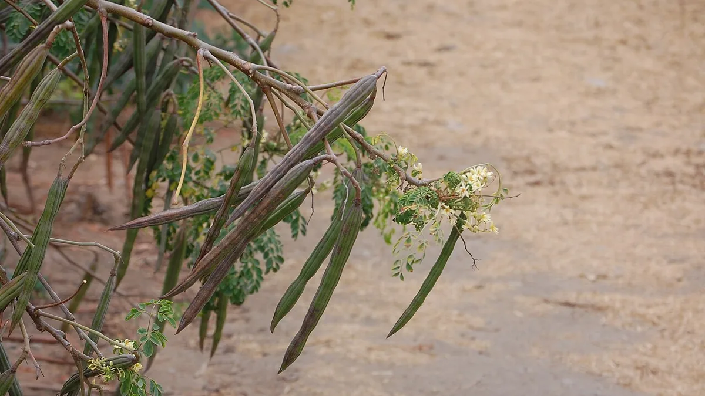

🗓️ நடவு: ஜூன்-அக்டோபர்📍 தேனி, கரூர், திண்டுக்கல்✂️ கவாத்து அவசியம்
முருங்கை சாகுபடி — காய், இலை, விதை
Drumstick (Murungai) Farming
காய், இலை, விதை — மூன்றுக்கும் சந்தை உள்ள பயிர் முருங்கை. ஆனால் மரத்தை உயரமாக வளரவிட்டால் லாபம் மேலே போய்விடும்.
✍️ Kunal Rajput — KrashiMitra⏱️ 8 நிமிடம் படிக்க📅 அக்டோபர் 2026

முருங்கை. நுனி கிள்ளிய செடியில் காய்கள் கை எட்டும் உயரத்தில் வரும்.
முருங்கை — ஒரே பார்வையில்
🌱
PKM-1, PKM-2
செடி முருங்கை ரகங்கள்
✂️
2-3 அடி
நுனி கிள்ளும் உயரம்
🍃
இலைப் பொடி
கூடுதல் வருமானம்
📖
முன்னுரை
தேனி, திண்டுக்கல், கரூர், திருப்பூர், தூத்துக்குடி — தமிழ்நாட்டின் வறண்ட மாவட்டங்களில் குறைந்த
நீரில் நிலையான வருமானம் தரும் பயிர் முருங்கை. கரூர் மாவட்டத்தின் அரவக்குறிச்சி
முருங்கைக்குப் பெயர்போனது; ஒட்டன்சத்திரம் சந்தையிலிருந்து முருங்கைக்காய் தென்னிந்தியா முழுவதும் செல்கிறது.
முருங்கையின் சிறப்பு — காய், இலை, விதை மூன்றுக்கும் சந்தை உண்டு. குறிப்பாக முருங்கை
இலைப் பொடிக்கு உள்நாட்டிலும் வெளிநாட்டிலும் தேவை வளர்ந்து வருகிறது. ஆனால் பல விவசாயிகள்
மரத்தை உயரமாக வளரவிட்டுக் காய் பறிக்க முடியாமல் இழப்பைச் சந்திக்கிறார்கள். இக்கட்டுரை ரகத் தேர்வு,
கவாத்து, மறுதாம்பு, இலைப் பொடி, விற்பனை — அனைத்தையும் விளக்குகிறது.
விளம்பரம்
🌿
செடி முருங்கையா, மர முருங்கையா?
பெரியகுளம் தோட்டக்கலை ஆராய்ச்சி நிலையம் (TNAU) வெளியிட்ட PKM-1, PKM-2 ஆகியவை
விதை மூலம் வளர்க்கப்படும் "செடி முருங்கை" (ஆண்டு முருங்கை) ரகங்கள். இவை விரைவில் காய்க்கத்
தொடங்கும், செடி உயரம் குறைவாக இருப்பதால் பறிப்பது எளிது. பாரம்பரிய "மர முருங்கை" கொம்பு
(தண்டுத் துண்டு) மூலம் நடப்பட்டு பல ஆண்டுகள் காய்க்கும்.
அம்சம்
செடி முருங்கை (PKM-1, PKM-2)
மர முருங்கை
நடவு
விதை மூலம்
கொம்பு (தண்டுத் துண்டு) மூலம்
காய்ப்பு
விரைவில் தொடங்கும்
சற்று தாமதமாக
உயரம்
கவாத்து செய்தால் குறைவு
உயரமான மரம்
ஆயுள்
மறுதாம்பு மூலம் சில ஆண்டுகள்
பல ஆண்டுகள்
யாருக்கு ஏற்றது
வணிகச் சாகுபடி, இலைப் பொடி
வரப்பு, வீட்டுத் தோட்டம்
🌱
நடவு
மண்: நன்றாக வடியும் செம்மண், மணல் கலந்த மண் சிறந்தது. நீர் தேங்கும் களிமண்ணில் வேர் அழுகும்.
பருவம்: பருவமழைக்கு முன் அல்லது பருவமழைக் காலத்தில் நடவு செய்தால் செடி எளிதில் நிலைக்கும் — தமிழ்நாட்டில் பலர் ஜூன் முதல் அக்டோபர் வரை நடுகிறார்கள்.
குழி: குழியில் நன்கு மக்கிய தொழுவுரம் கலந்த மேல்மண் நிரப்பி நடுங்கள்.
உரம்: எந்த உரம் எவ்வளவு என்பது மண் வள அட்டை அல்லது வேளாண் அறிவியல் மையம் (KVK) ஆலோசனைப்படி.
சொட்டு நீர்: குறைந்த நீரில் சீரான வளர்ச்சிக்கு சொட்டு நீர்ப் பாசனம் மிகப் பொருத்தம்.
விளம்பரம்
✂️
நுனி கிள்ளுதலும் கவாத்தும் — காய்ப்பின் ரகசியம்
செடி முருங்கையை உயரமாக வளரவிட்டால் கிளைகள் குறைந்து, காய்கள் மேலே சென்று பறிப்பது கடினமாகும்.
அதனால்:
நுனி கிள்ளுதல்: செடி சுமார் இரண்டு-மூன்று அடி உயரம் வந்ததும் நுனியைக் கிள்ளினால் பக்கக் கிளைகள் அதிகம் வரும்.
பக்கக் கிளைகளின் நுனி: பக்கக் கிளைகளும் நீளமானதும் அவற்றின் நுனியைக் கிள்ளுங்கள் — செடி குடை வடிவில் புதர் போல் வளரும்.
அறுவடைக்குப் பின் கவாத்து (மறுதாம்பு): காய்ப்பு முடிந்ததும் செடியைத் தரையிலிருந்து சில அடி உயரத்தில் வெட்டினால், புதிய கிளைகள் வந்து மீண்டும் காய்க்கும்.
கவாத்து என்பது செலவில்லாத வேலை, ஆனால் அதுவே காய்ப்பையும் பறிப்புச் செலவையும் தீர்மானிக்கிறது.
கை எட்டும் உயரத்தில் காய்க்கும் முருங்கைதான் லாபம் தரும் முருங்கை.
🐛
பூச்சிக் கண்காணிப்பு
முருங்கையில் கம்பளிப்புழு கூட்டமாகத் தண்டில் இருந்து இலைகளைத் தின்னும்; காய்
ஈ காய்களுக்குள் முட்டையிட்டுக் காய் அழுகச் செய்யும். கம்பளிப்புழுக் கூட்டங்களைத் தண்டில்
கண்டதும் அப்புறப்படுத்துங்கள்; சேதமடைந்த காய்களைச் சேகரித்து அழியுங்கள். மருந்து தேவைப்பட்டால்
KVK ஆலோசனைப்படி, லேபிளின்படி மட்டுமே பயன்படுத்துங்கள் — முருங்கை இலையும் காயும் நேரடியாக
உணவாகப் பயன்படுவதால் காத்திருப்புக் காலத்தை கட்டாயம் பின்பற்றுங்கள்.
🥢
காய் அறுவடையும் தரமும்
முருங்கைக்காயின் விலை அதன் இளமை, நீளம், நேர்த்தன்மை ஆகியவற்றைப் பொறுத்தது. காய்
முற்றிவிட்டால் உள்ளே நார் அதிகமாகி, விதை கடினமாகி, சமையலுக்குப் பயன்படாது; வியாபாரிகள் அதைக்
குறைந்த விலைக்கே எடுப்பார்கள்.
சரியான நேரத்தில் பறிப்பு: காய் முழு நீளம் வந்து, இன்னும் மென்மையாக, எளிதில் வளையும் நிலையில் பறியுங்கள்.
காலை அல்லது மாலை: வெயில் குறைந்த நேரத்தில் பறித்தால் காய் வாடாது.
தரம் பிரித்தல்: நீளமான, நேரான காய்களையும் வளைந்த, சிறிய காய்களையும் தனித்தனியாகக் கட்டுங்கள்.
கட்டு, போக்குவரத்து: சீரான கட்டுகளாகக் கட்டி, நிழலில் வைத்து, அன்றே சந்தைக்கு அனுப்புங்கள்.
சில காய்களை மரத்திலேயே முற்றவிட்டு உலரவிட்டால் விதை கிடைக்கும். அடுத்த நடவுக்கும்,
சில இடங்களில் எண்ணெய் தயாரிப்புக்கும் விதைக்குத் தேவை உண்டு. ஆனால் விதைக்காக விடும் காய்கள்
செடியின் சக்தியை எடுத்துக்கொள்ளும்; அதனால் காய் விற்பனைக்கான செடிகளையும் விதைக்கான செடிகளையும்
தனித்தனியாக ஒதுக்குவது நல்லது.
🍃
முருங்கை இலைப் பொடி — கூடுதல் வருமானம்
இலை அறுவடை: இளம், பசுமையான இலைகளைப் பறியுங்கள்; நோயுற்ற, மஞ்சள் இலைகளை நீக்குங்கள்.
நிழலில் உலர்த்துதல்: நேரடி வெயிலில் உலர்த்தினால் பச்சை நிறமும் சத்துக்களும் குறையும். சுத்தமான வலை அல்லது தட்டில், நிழலில் உலர்த்துங்கள்.
அரைத்தல், பொதி செய்தல்: சுத்தமான இயந்திரத்தில் அரைத்து, காற்றுப் புகாத பையில் அடையுங்கள்.
அனுமதி: உணவுப் பொருளாக விற்க FSSAI பதிவு அல்லது உரிமம் தேவை; உங்களுக்கு எந்த வகை பொருந்தும் என்பதை FSSAI அதிகாரப்பூர்வ இணையதளத்தில் பாருங்கள்.
வாங்குபவர் முதலில்: பெரிய அளவில் தொடங்கும் முன் வாங்குபவரையோ ஒப்பந்தத்தையோ உறுதிசெய்யுங்கள்.
🚫
இந்தத் தவறுகளைச் செய்யாதீர்கள்
நீர் தேங்கும் நிலத்தில் நடவு — வேர் அழுகல், செடி சாயும்.
நுனி கிள்ளாமல் விடுதல் — உயரமான செடி, குறைந்த காய், அதிகப் பறிப்புச் செலவு.
காய்களை முற்றவிடுதல் — நார் அதிகமாகி சந்தையில் விலை குறையும்.
ஒரே நேரத்தில் ஊர் முழுவதும் அறுவடை — சந்தையில் வரத்து அதிகமாகி விலை சரியும்.
🗓️
செடி முருங்கை நாட்காட்டி
காலம்
முக்கிய வேலை
நடவுக்கு முன்
நிலம் தயாரிப்பு, குழி, தொழுவுரம், சொட்டு நீர் அமைப்பு
ஜூன்-அக்டோபர்
விதை நடவு அல்லது நாற்று நடவு
இரண்டு-மூன்று அடி உயரம்
நுனி கிள்ளுதல், பின் பக்கக் கிளை நுனி கிள்ளுதல்
காய்ப்புக் காலம்
இளம் காய் பறிப்பு, கம்பளிப்புழு-காய் ஈ கண்காணிப்பு
காய்ப்பு முடிந்ததும்
கவாத்து செய்து மறுதாம்பு; இலை அறுவடை
✅
முடிவுரை
முருங்கை குறைந்த நீரில் நிலையான வருமானம் தரும் பயிர். மூன்று விஷயங்கள்: நன்றாக வடியும் நிலம்,
நுனி கிள்ளுதலும் கவாத்தும், மற்றும் காய், இலை இரண்டுக்கும் சந்தை.
கை எட்டும் உயரத்தில் காய்க்கும் முருங்கைதான் லாபம் தரும் முருங்கை.
விளம்பரம்
❓
அடிக்கடி கேட்கப்படும் கேள்விகள்
1PKM-1 முருங்கை என்றால் என்ன?
PKM-1 என்பது பெரியகுளம் தோட்டக்கலை ஆராய்ச்சி நிலையம் (TNAU) வெளியிட்ட, விதை மூலம் வளர்க்கப்படும் செடி முருங்கை ரகம். விரைவில் காய்க்கத் தொடங்கும், கவாத்து செய்தால் உயரம் குறைவாக இருக்கும். PKM-2 இதே வரிசையின் மற்றொரு ரகம்.
2drumstick farming in tamil — முருங்கை எப்போது நட வேண்டும்?
தமிழ்நாட்டில் பலர் ஜூன் முதல் அக்டோபர் வரை, பருவமழைக்கு முன் அல்லது பருவமழைக் காலத்தில் நடுகிறார்கள்; அப்போது செடி எளிதில் நிலைக்கும். நன்றாக வடியும் மண் அவசியம்.
3முருங்கையில் நுனி கிள்ளுவது ஏன்?
செடி சுமார் இரண்டு-மூன்று அடி உயரம் வந்ததும் நுனி கிள்ளினால் பக்கக் கிளைகள் அதிகமாகி, காய்கள் கை எட்டும் உயரத்தில் வரும். இதனால் காய்ப்பு கூடும், பறிப்புச் செலவு குறையும்.
4முருங்கை மறுதாம்பு எப்படிச் செய்வது?
காய்ப்பு முடிந்ததும் செடியைத் தரையிலிருந்து சில அடி உயரத்தில் வெட்டினால் புதிய கிளைகள் வந்து மீண்டும் காய்க்கும். கூர்மையான கருவியால் சுத்தமாக வெட்டுங்கள்.
5முருங்கை இலைப் பொடி எப்படித் தயாரிப்பது?
இளம், பசுமையான இலைகளை நிழலில் உலர்த்தி, சுத்தமான இயந்திரத்தில் அரைத்து, காற்றுப் புகாத பையில் அடைக்க வேண்டும். உணவுப் பொருளாக விற்க FSSAI பதிவு அல்லது உரிமம் தேவை.
6முருங்கைக்காய்க்கு முக்கியச் சந்தை எது?
ஒட்டன்சத்திரம் சந்தை முருங்கைக்காய்க்கு முக்கிய மையம்; அரவக்குறிச்சி, தேனி, திண்டுக்கல் பகுதிகளும் பெயர்போனவை. இன்றைய விலையை KrashiMitra-வில் பாருங்கள்.
🌾
KrashiMitra.in — உங்கள் நம்பகமான வேளாண் நண்பன்
சந்தை விலை, அரசுத் திட்டங்கள், விதை-உரத் தகவல், பயிர் நோய்க்கான தீர்வு — அனைத்தும் தமிழில்.